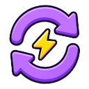

1
0
Рюкзак
0/20
Сила
0
↻
Прокачка

АВТО
выкл
Рывок
Домой
Вызвать босса
Говорить
ОХОТА ЗА ОПЫТОМ
Без рекламы
Без доната
Офлайн
Автосохранение
Играть
Как играть
Настройки
Прокачка
0
0
×
Навыки
Оружие
Таланты
Главы
Круг
Покупать:
x1
x10
МАКС
Пауза
×